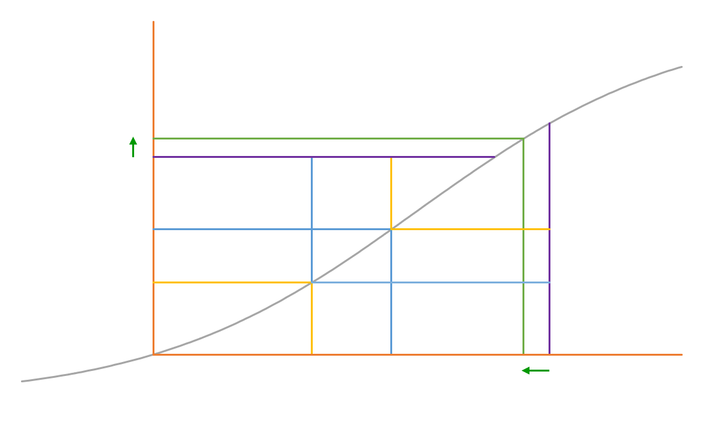

flowchart LR A["<b>dyad</b><br/>one alternative"] -->|"average over<br/>alters"| B["<b>actor</b><br/>one decision situation"] B -->|"average over<br/>decision situations"| C["<b>effect size</b><br/>AME"] C -->|"accumulate<br/>over a period"| D["<b>period</b>"]
2 Marginal effects
What they are in general, and what they have to become for the SAOM
2.1 The general idea
A marginal effect (for a discrete choice model) asks how a predicted probability changes when a predictor changes. Three variants are standard tools for reporting non-linear models on the outcome scale (Long and Mustillo 2021):
First difference. Compare the predicted probability at two values of the predictor — usually one unit apart, or a stated contrast such as 0 versus 1.
Partial derivative. The limit of that comparison for vanishingly small changes. Defined only for (quasi-)continuous predictors.
Second difference. Take the first difference of one predictor, then ask whether it differs by the level of another. This is the probability-scale version of an interaction.
For the SAOM, discrete differences are the operative quantity. Almost every effect statistic is a count or an indicator (how many two-paths, whether the tie is reciprocated, whether ego and alter match) so a step of one unit, or a \(0 \to 1\) contrast, is the natural comparison and the derivative plays little role.
2.2 Which situations do you evaluate at?
A marginal effect is not one number. There is one
- for every predictor,
- at every combination — or every relevant combination — of the other predictors,
- for every observation.
A summary therefore has to say where it was evaluated, and three conventions are standard.
- MEM — the marginal effect at the mean of every predictor.
- MER — the effect at representative values chosen by the researcher.
- AME — the effect computed at every observation, then averaged.
For the SAOM there is no meaningful mean decision situation, so MEM has no real counterpart: a choice set has to be an actual network with ties actually present or absent, and averaged statistics describe no situation an actor could face. MER does carry over, as evaluation at a stipulated decision situation — this is the construction Duxbury (2026b) builds on for ERGMs, contrasting potential ties whose statistic profiles are set by the researcher rather than taken from the data. AME is what is reported here, and the innocuous-sounding phrase “averaged over all observations” is where the SAOM’s real question lives, since ministeps are not observed. Which average?, at the end of this chapter, takes that up.
2.3 Marginal effects in network models
Both major model families relate to a familiar regression form, and the relation is not the same in the two cases (Glasgow 2022; Train 2009).
| ERGM | SAOM | |
|---|---|---|
| unit of analysis | the tie | the actor’s decision |
| regression analogue | binary logistic | multinomial (conditional) logit |
| data | cross-sectional | longitudinal |
| marginal effects | well developed | developed here |
This distinction does real work later. The ERGM’s tie-level form is a binary logit — the conditional log-odds of one tie given the rest of the network — which is why the ERGM marginal-effects literature could build directly on intuitions from the long-running binary-logit debate in sociology and epidemiology. The SAOM cannot: it needs the conditional-logit choice set and the opportunity structure, two steps away from the familiar case rather than one.
2.3.1 Existing work
For ERGMs, Duxbury and colleagues have developed probability-scale effect sizes (Duxbury 2023; Duxbury and Wertsching 2023), available in the ergMargins package (Duxbury 2026a). Duxbury (2026b) extends this to structural terms and adds a further argument: a higher-order structure cannot change without changing its lower-order building blocks, so “holding all else constant” readings of structural coefficients are hard to sustain.
For SAOMs, the closest existing tool is relative importance (Indlekofer and Brandes 2013), which compares how much different effects contribute to an actor’s decision by modifying model coefficients and analyzing changes in probabilities. It is a complement rather than a marginal effect: it does not report a probability contrast under a stated counterfactual in regard to the predictors.
Effects in a SAOM are related to one another too, so the same question arises here: perturb one change statistic and another in the same specification may have to move with it. So far this is resolved for direct logical relationships — multiplicative interactions, and effects built from the same covariate — which are declared explicitly and then carried through the perturbation wherever it reaches; Chapter 3 shows it in use. Beyond those, it remains a specification-specific question, and preferring elementary effects keeps the structure easier to see.
2.4 What the model decides
A SAOM does not model the jump from one observed wave to the next directly. It models the process between waves as a sequence of ministeps: one actor gets an opportunity, looks at every alternative open to them, and toggles one tie — creating a new one or dropping one they have — or changes nothing.
Every quantity below therefore sits at one ministep and asks: for this actor, facing this alternative, what happens next?
The model has two components: the rate function governs how often opportunities arrive and how they are distributed over the actors, the objective function what an actor chooses once they have one. The rate at which a specific tie actually changes is the product, \(\lambda_i\,p_{ij}\).
Everything in this chapter is the second factor — a probability per decision opportunity, with \(\lambda\) held out. Throughout we take the usual case of a rate that is constant within a period, so that opportunities are spread evenly over actors and \(\lambda_i\) is just \(\lambda\). Chapter 6 returns to what happens when the rate is put back in.
2.5 What the model sees
The underlying variables are the network state and the covariates, but they reach the decision only through the chosen effect statistics \(s_{k,ij}(x)\): the value effect \(k\) takes for actor \(i\) if alternative \(j\) is chosen.
Weighted by the parameters, these make up the objective function — how attractive alternative \(j\) is to actor \(i\):
\[f_{ij}(x) = \sum_k \beta_k\, s_{k,ij}(x)\]
Written this way \(f\) is an evaluation function: the statistics describe the network the decision leads to, so the same weights apply whether the actor is creating a tie or keeping one. RSiena’s objective function is more general — it can carry separate creation and endowment terms that apply to only one of those two moves — but everything here assumes the evaluation-only case, which is the common one. Which statistics are available is catalogued in chapter 13 of the manual (Ripley et al. 2026).
The choice probabilities then follow as a multinomial logit over the whole choice set: all \(n-1\) possible toggles, plus the option to change nothing.
\[p_{ij}(x) = \frac{\exp f_{ij}(x)}{\sum_h \exp f_{ih}(x)}\]
Two distinct questions can be asked about a single tie, and the distinction matters for what follows:
- the toggle statistic \(\tau_{k,ij}(x)\) — given the current state, how much would the objective function move if this tie were flipped?
- the change statistic \(\delta_{k,ij}(x)\) — how much more preferable is the network with this tie than the network without it?
The second is invariant to the decision margin. It compares presence with absence, so it gives the same answer whether the actor is contemplating creating the tie or keeping one they already have. The first does not: flipping an absent tie adds a configuration while flipping a present one removes it, so \(\tau\) changes sign between the two situations and \(\delta\) does not.
\[\delta_{k,ij}(x) = \begin{cases}\hphantom{-}\tau_{k,ij}(x) & x_{ij} = 0\\ -\tau_{k,ij}(x) & x_{ij} = 1\end{cases}\]
That invariance is what allows creation and maintenance to be discussed on one footing, and it is \(\delta\) that the counterfactuals below move. The objective function is sometimes written as \((1-2x_{ij}) \sum_k \beta_k \delta_{k,ij}(x)\), which just means that we add for creation decisions and subtract for maintenance ones.
2.6 Two probabilities to keep apart
Because a toggle means opposite things depending on whether the tie is there:
Toggle probability \(p_{ij}\) — the probability the actor picks alternative \(j\). For an absent tie that creates it; for a present tie, dissolves it.
Tie probability \(r_{ij}\) — the probability the tie exists after the ministep: \(p_{ij}\) when the tie is absent, and \(1 - p_{ij}\) when it is present.
The second is usually the one to report, because “higher means more likely to be there” then reads the same way in both cases.
2.7 First differences
To isolate one mechanism, hold the decision situation fixed — same actor, same alternative, every other statistic exactly where it is — and change only the focal change statistic. The resulting shift in probability is the first difference.
Evaluated where the tie is absent, this is the effect on the probability of creating it. Evaluated where the tie is present, it is the effect on the probability of keeping it. We call these the creation margin and the maintenance margin, and they routinely differ a lot: in a sparse network almost every alternative is a potential creation with a small baseline probability, while existing ties are far less and usually well embedded and likely to survive.
These are two margins of one evaluation function, not the separate creation and endowment terms RSiena can also fit. Nothing is estimated twice: the same contrast is simply evaluated in the two places a tie decision can sit. Where a specification does include creation or endowment effects, they enter the objective function and are carried along like any other effect.
Averaging first differences over many decision situations gives an average marginal effect, the AME from the start of this chapter.
2.9 Interactions as second differences
Does the effect of one mechanism depend on the level of another? Take the first difference twice — once at each level of the moderator — and subtract. That second difference is the probability-scale statement of an interaction.
It can be non-zero for three different reasons:
| what it means | |
|---|---|
| conceptual | a genuine interaction term in the objective function |
| mechanical | non-linearity alone: the same latent shift maps to different probability changes at different baselines |
| scaling-induced | the effective noise level differs across contexts, rescaling the same latent contrast |
When a coefficient and a second difference disagree in sign, the second reason is the first explanation to check — and it is substantively interesting rather than a problem, since it says the mechanisms combine differently where baseline probabilities differ.
Figure 2.3 is that case drawn, and it does not take extreme values to produce. With a baseline of \(-2.0\), one mechanism worth \(1.2\), another worth \(1.8\) and an interaction of \(-0.2\), the two mechanisms acting together raise the probability by \(0.571\), where their two separate increments sum to only \(0.522\). The interaction is \(-0.2\) as a coefficient and \(+0.05\) as a second difference.

Differences in scaling is harder to evaluate for latent decisions but is still a potential factor to keep into account e.g. when comparing between data sets and contexts and will not necessarily differ between the coefficient and probability scale in SAOM.
2.10 Which average?
The contrasts above are defined for one dyad in one decision situation. Getting to an interpretable summary efefct size means climbing a ladder, and each rung is a choice to state.
The third rung comes in two versions, and choosing between them is the SAOM-specific part.
At the observed waves. At an observed network we do not know whose turn comes next, so every actor’s next potential ministep is evaluated and averaged. Fast, easy to report, easy to stratify. It answers: how large are these contrasts in the situations that could arise directly after an observed network?
Along model-implied ministeps. The sequence between waves is unobserved, so simulate it from the fitted model and average over the situations actually visited. It answers: how large are these contrasts in the situations the fitted model says typically occur between observations? In the software, dynamic = TRUE.
They can differ — if a mechanism matters most in configurations that arise between waves rather than at them, the second is larger — so it can be worth reporting both and saying so when they agree.
One dimension is independent of this ladder: the margin. Creation, maintenance, and joined tie-presence are available at every rung.
The fourth rung, accumulating to a whole period, is a different kind of object and is taken up in Chapter 6.